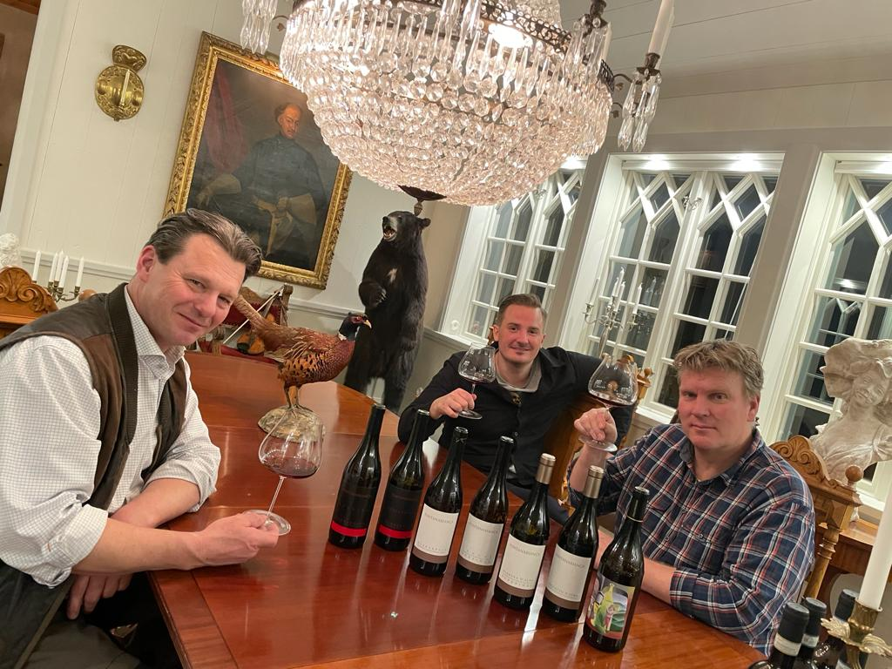

Swedish wine import
Honest wines
from small-scale producers
We want to spread wines from small producers in regions that are very close to our hearts.
Swedish wine import
We want to spread wines from small producers in regions that are very close to our hearts.
Our philosophy
Our portfolio consists of both classic wines and innovative producers with the common denominator that the wines are of the highest quality.
Among our producers you will find both the winemaker who does their utmost to let the grape and terroir express themselves fully without too much interference, and producers who with finesse in both the vineyard and winery put their own stamp on the wine.
We are very proud of the carefully selected producers we work with as they fully reflect our own wine philosophy. The craftsmanship and love of wine combined with quality and style that represents its terroir has been one of our primary starting points.

"Having the opportunity to offer you as a customer wines from these fantastic producers is what drives us"

We offer all of our stocked wines to our restaurant customers. The price list is updated regularly with new wines/vintages, indication when stock is low, and wines are removed when sold out. All wines on the list are in stock.
In addition to what we have in stock, we can in some cases offer other wines from our producers such as other vintages, magnum bottles or other wines from the producer's portfolio that we don't stock.
Curious to try some of our wines? Contact us and we'll book a tasting at your convenience.
Producers

"Four generations of men in love with their vineyard." This quote encapsulates the pride and love that Ettore Germano has for his grapes and wines.
Read more
A wine should only be called a quality wine if it reflects the taste of its terroir. This is the winemaking philosophy at Fontanabianca.
Read more
The Morra family's history goes back to the mid-1900s when the family acquired their first small parcel of a vineyard.
Read more
Hearing Alberto talk about his love for the hills of Roero along with his respect for Arneis and Nebbiolo is wonderful.
Read more
Réva is a dynamic and young wine house in the Barolo region with a team full of energy that wants to create something significant.
Read more
Lapo grew up in a small village in Tuscany and from a young age developed an interest in wine and winemaking.
Read more
Behind the name we find the two young winemakers Matteo Vaccari and Maddalena Fucile.
Read more
The estate was purchased in 1965 by Massimo Becattelli's grandparents and was then inherited by his mother Concetta and his father Mario.
Read more
In the mid-1970s Villa i Cipressi was born when son Hubert Ciacci chose to expand his father's small honey farm.
Read more
The Charlot family has been growing grapes since 1877 in Moussy, Vallée de la Marne, and Victor is now the sixth-generation winegrower.
Read more
In 1930 the winery was founded by Jeanne Clerget. Justine is the fourth-generation winemaker.
Read more
Coffinet-Duvernay was born in 1989 following the marriage of Laura Coffinet and Philippe Duvernay, but the family estate dates back to the 1860s.
Read more
The domaine has a long history stretching all the way back to 1540.
Read more
In 2018 Benoit Merchier and his family took over a 12-hectare vineyard from a family that had been growing grapes there for 7 generations.
Read more
Domaine Villet is found in Arbois, Jura, with origins dating back to 1900 and a strong tradition of natural winemaking.
Read more
In 1992 the estate was purchased by the Guiller family after Isabelle had her eye on it for several years.
Read more
In 1989 Mario Sergio Nuno started his project, which he named Quinta das Bágeiras.
Read more
In the village of Poutena, located in the Bairrada region, we find Luis Patrão and Eduarda Dias who together created Vadio.
Read more
In 1982 the family purchased their first vineyard due to their love of port wine and began producing 2-3 barrels per year.
Read more
In the magical Mosel Valley we find the fantastic Riesling producer Martin Müllen.
Read more
The Pichler family has been based in the village of Wosendorf since 1731 and purchased their original cellar in 1884.
Read more"In vino veritas – i vinet finns sanningen"
Selection
The list is updated continuously. All wines are available through Systembolaget's order assortment or through private import. Contact us at order@verumvinum.se to place an order.


As a private individual, you can also get your hands on most of the wines in our assortment that are not available in the order assortment. Contact us and we will place an order for you which is then made as a private import through Systembolaget.
Minimum order: 3 bottles. Order fee: 95 kr per order. Mixed cases are fine!
Order: order@verumvinum.se6 bottles – Rudi Pichler, Wachau
Grüner Veltliner & Riesling i olika uttryck från Wachau
2 982 kr6 bottles – Michel Rebourgeon, Bourgogne
Beaune & Pommard – röda burgunderviner
4 230 krSystembolaget
Below you will find all wines and wine boxes that we have in Systembolaget's temporary and order assortment. Products are purchased directly on Systembolaget's website and delivered to your preferred Systembolaget store.

551 kr
Art.nr 93274

179 kr
Art.nr 77989

389 kr
Art.nr 92192

370 kr
Art.nr 77516
| Vin | Pris | Art.nr |
|---|---|---|
| Ettore Germano Barolo Cerretta 2019 | 551 kr | 93274 |
| Fontanabianca Barbaresco Bordini 2021 | 379 kr | 94473 |
| Réva Barolo 2021 | 389 kr | 92192 |
Upcoming events
Get updates about new producers, assortment and upcoming tastings.
About us
Verum Vinum was founded by three wine geeks who also happen to be very good friends, two of whom are trained sommeliers.
The idea behind the company is to spread what we love, namely great wines.
We operate in regions close to our hearts and wine styles that you can find plenty of in our own wine cellars.
The producers we have chosen to work with are very dedicated to their craft and have a wine philosophy very similar to our own.
We have a close relationship and have become good friends with all our producers, which means we often have visits from our producers in Sweden and can offer our customers tastings with the producers as well as winemaker dinners.
Like many other wine lovers, we have a passion for Burgundy and Piedmont, but we are constantly looking for new regions and producers that fit our portfolio and philosophy "Honest wines from Small-scale producers".
Our goal is to always be a flexible and reliable partner/supplier to our customers.
